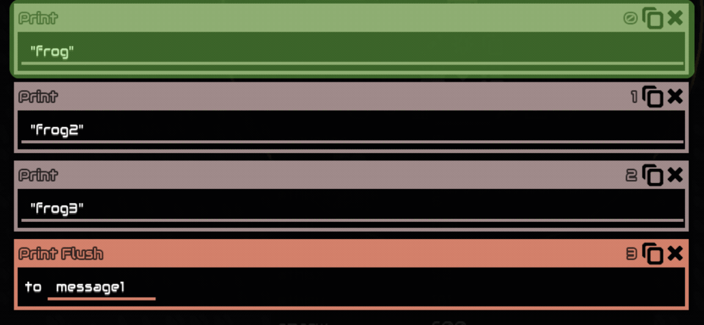
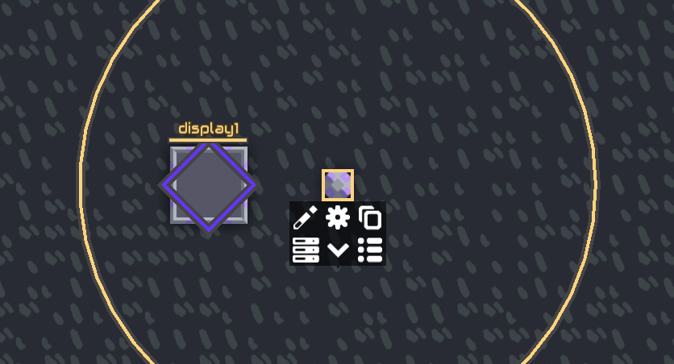
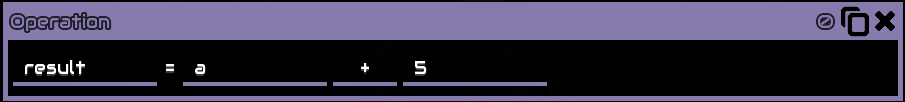
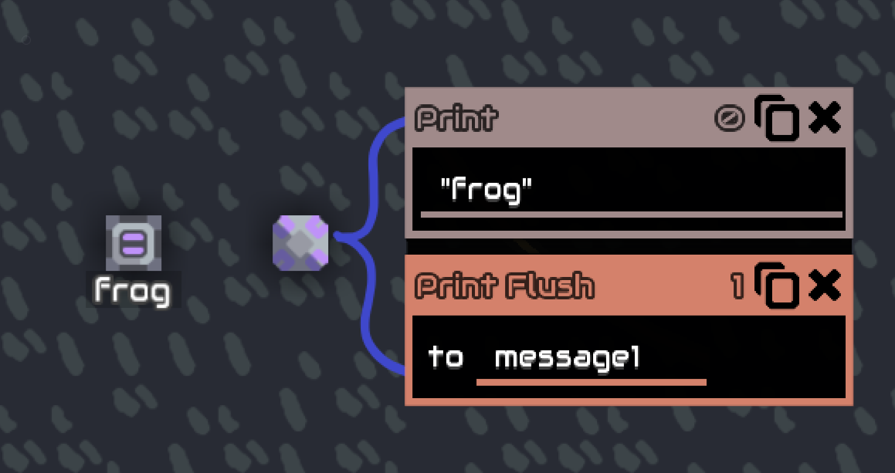
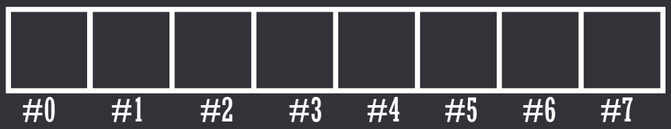
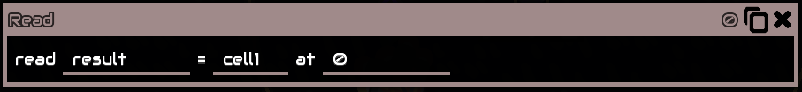
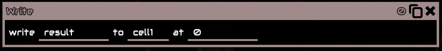
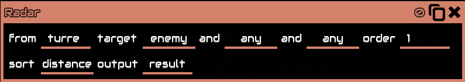
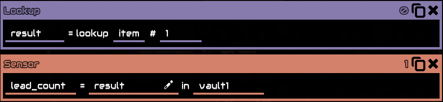
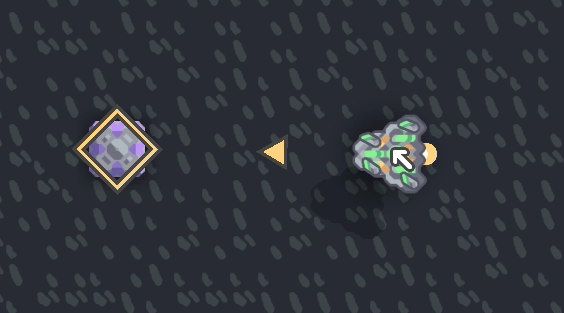

Mlog Documentation
By Yruei
Foreword
This documentation was created entirely by me, so there may be inaccuracies or omissions. As English is not my first language, I apologize for any spelling or grammar errors. If you have any corrections, additions, or suggestions, please feel free to contact me to discuss them.
Or if you just want to ask questions, I’ll be happy to help
you can DM me on
Discord (Yruei)
Reddit (u/Far_Kale558)
Incomplete list or information, if you want to help expanding it:
Incomplete
Incomplete
and every ‘(WIP)’ labeled title
Introduction
What is Mindustry logic?
Mindustry Logic (mlog) is a scripting language added in v6 for the purpose of introducing more advanced automation and strategy into the game It is heavily inspired by Assembly languages, therefore the language is a low level language making it harder to understand (low level being low to machine language (Assembly, C, etc) and far from human language, high level language example are (python, javaScript, C#, etc) if you have previous programming experience it's very easy to learn but people who are entirely new to programming might find this a little confusing.
Fun fact, it is turing complete (meaning you can literally do anything a real computer can, although the practicality is questionable),
it is often used for more advanced automation (telling units what to do, disabling/enabling blocks, and more),
For more advanced people, they like to mess around just for fun making stuff that are not actually useful to campaign like games, emulators, renderings, etc.
mlog is not necessary for the completion of campaign , it is very optional, often the time you spent coding will be more than if you just do it manually..
Glossary
Data types
Integers
Integers are whole numbers, meaning no decimal, 1,2,3, are integers, 1.001, are not.
Float
Opposite of integers, decimal numbers, 1.001, are float.
Boolean
A data type that can have 1 of 2 states, true or false, 0 or 1.
Strings
a sequence of characters, different from variables, in mlog strings are enclosed by “ (quotation mark) (“Hello, world” is a string).
Block or Unit Reference
every block and unit has a unique reference, so every block and unit can be differentiated from each other , internally they look like "message#98257" or “poly#49178“, these are not viewable without modifying the game. in game these references are stored in a variable like Building Variable, or @unit they can also be written to a normal variable
Basic concept
Processors
There are 3 types of Logic Processors, Micro processor, Logic processor, and Hyper processor, each have different speeds and range (Information can be found in the game’s info menu).
Processor’s UI
when opening a processor by clicking the pencil icon:

you will be prompted to this screen:
the “Add” button () opens a menu to add an instruction:

the “Vars” button () opens a menu showing all of your variables

the “edit” button ()opens a menu to export/import codes
when clicking “Copy to Clipboard” it will copy the code of the processor to your clipboard, unlike a schematic mlog code are plain readable text, click here for more info
How Processor run its code
They Always run Instruction from top to bottom 1 at a time You can only jump and wait, you cannot make it run from bottom to top for example. Here is a visualization:
with jumps:

When the processor reach the end of its instruction it will go back to 0, repeating the loop indefinitely
Links
You can link a building to the processor by clicking the processor (you can see a circle, this is the processor range) and clicking the building
“display1” is now a variable that can be used in the processor, it stores a building reference. is also sometimes called a “building variable” building variable cannot be overwritten by any means, in other words, you cannot use this variable to put in an output of an instruction
Variables
Variables are the fundamental of programming, to put it simply, they are just named “containers” to store data to, for example the Set instruction sets a variable:

This will make “x” a variable, this variable can be used for all sort of different things, for example, the Operation instruction
Because “x” is 10 this operation means 10 + 5, and the result of it is written to the “result” variable, meaning “result” is now 15 Of course it doesn’t have to be “result”, you can write anything for it, different people write their variable differently, some chooses to write arbitrary words/letters like “peach” and others simply write “x+5”, whatever you choose is up to you, just keep in mind you have to remember them.
Incrementing Variable
Increment is the act or process of increasing
Since processor loops, this will increase “x” by 1 every loop, as time goes on x will get bigger and bigger. This is what’s called incrementing a variable
Built in Variables
Built in variables are variables that have their value determined by the game, but can also change. they are preceded by “@”, here are lists of built in variables (if you’re just starting out you don’t have to read all of this you can always come back):
- @counter
- @this
- @unit
- @thisx and @thisy
- @mapw and @maph
- @links
- @ipt
- @time, @tick, @second and @minute
- Because this list is long you can check the Appendix
@counter shows the current line the processor runs at, other than giving you crucial information while debugging you can also use it by writing to it, changing its value, usage example:

This acts like jump always where it will jump to instruction 10 If read it will return the next line instead:

Since this set instruction is at line 10, the “x” variable will be 11. Another usage example is: @counter Array.
@this shows the building reference for that processor, example: anything that uses building reference can be replaced by this, so instead of ‘processor1’ you can write “@this” for this processor
@unit shows the current unit that is stored in the processor as the result of the unit bind instruction. For more information go Controlling Units
Like the name suggest, both shows the coordinates location of the processor respectively
These shows the map width and map height, for example if your map width is 300 @mapw will be equal 300
@links shows the number of links the processor has, example: if you have 3 buildings linked to the processor ‘display1’ , ‘display2’ , ‘display3’ , @links will be 3
ipt stands for instruction per tick, this shows how many instruction a processor run in a single tick 1 second is 60 ticks
Shows the playtime of the current save, this is updated every frame, NOT every time the processor checks for it @time, in millisecond @tick, in tick(1/60th of a second) @second, in second @minutes, in minute
Constants
Constant, they are like variable but you can’t write to them, their value are predetermined, for example “@pi”, like the name suggest it is pi ( , 3.14159….), here are the list of constant (if you’re just starting out you don’t have to read all of this, you can always come back):
- Null
- true and false
- @pi
- @e
- @degToRad
- @radToDeg
null means none, it has no value
true and false are booleans, they are interpreted to 1 and 0
π, 3.14159….
Mathematical constant e (2,71828…)
To convert degrees to radian, multiply the number with this
Opposite of @degToRad
Buffers
Internally there is a Text buffer and a Draw buffer in each processor, when you use print or draw, when the processor runs it, it will store it in the buffer. Example: if you print “frog” the word “frog” will be stored in the text buffer, then to get that word to a message block you have to use Print Flush which transfer the items in the text buffer to the message block

It's the same case with draw.
The draw buffer has 256 item limit, meaning you can only draw 256 times before needing to flush, otherwise everything after 256 just gets thrown out,
displays also have a buffer limit, 1024 / tick to be exact, this means if you flush 1025 items to 1 display in 1 tick 1 item will be lost.
The text buffer has a 400 character limit, for example “frog” is 4 characters. Even though the message block has a 220 characters limit you can still print 400 characters to it.
- Message
- Switch
- Logic displays and Large
- Memory cell and Memory Bank
Is used with Print and Print Flush, can also be manually written by clicking it and clicking the pencil icon.
Has 2 states, enabled and disabled / 1 and 0, state can be read using Sensor instruction, and can also be controlled with Control instruction.
Is used with Draw and Draw Flush, display resolution can be seen in the game's info menu.
A cell can store up to 64 values, but only numbers, while Bank can store up to 512 values
How it works:
Let’s use a cell as an example, imagine it is like a numbered storage boxes
the number below are called addresses, since a cell can store up to 64 values that means there are 64 addresses in a cell, from #0 to #63 you can then store a number in this line of boxes by an address, for example if you want to store a number to box number #3 you would write:

this will store the number 1838 to box number #3, you then can read it again using `read`

this will read whatever inside box number #3 (1838) and put it in a variable
called ‘result’, therefore ‘result’ is now 1838
The largest integer that can be represented accurately in a single address (double-precision floating-point format)
is 2^53, which equals 9007199254740992.
from -2^53 , which is −9007199254740992. Beyond these limits,
floating-point representation may lead to inaccuracies due to the way numbers are rounded.
Instructions
- Read
- Write
- Draw
- Clear
- Color
- col
- Stroke
- Line
- Rect
- Line Rect
- Poly
- Line Poly
- Triangle
- Image
- Draw Flush
- \n
- Printing colors “ [ ] "
- Print Flush
- Get link
- Control
- Enabled
- Shoot
- Shootp
- Color
- Radar
- Sensor
- Set
- Operation
- +
- -
- *
- /
- //
- %
- ^
- Sqrt
- ==
- Not
- And
- <
- >
- <=
- >=
- log
- log 10
- abs
- floor
- ceil
- or
- b-and
- XOR
- flip
- max
- min
- angle
- angle diff
- len
- noise
- rand
- sin
- cos
- tan
- asin
- acos
- atan
- Lookup
- Pack Color
- Wait
- Stop
- End
- Jump
- ==
- Not
- <
- <=
- >
- >=
- ===
- Always
Read a value from a cell

Essentially the same with read but it writes instead
Example: the “result” variable is 10, then it will write “10” to ‘cell1’ at 0
Can also be directly written using a number instead of a variable.
Write a value to a cell

Essentially the same with read but it writes instead
Example: the “result” variable is 10, then it will write “10” to ‘cell1’ at 0
Can also be directly written using a number instead of a variable.
Adds a command to the draw buffer
Sets the entire screen to a specific color

RGB stands for Red,Green,Blue
Value can be from 0 (dimmest) to 255 (brightest)
Example: 255, 255, 255 is White
Sets the entire screen to a specific color

RGB stands for Red,Green,Blue
Value can be from 0 (dimmest) to 255 (brightest)
Example: 255, 255, 255 is White
Same as color, but use hex color code instead of RGB color code Usually used with the Pack Color instruction
Sets the line width for any upcoming draw operations
Draws a line from one coordinates to another coordinates

x,y is the first set of coordinates
x2,y2 is the second sets of coordinates
Draw a rectangle at the specified coordinates with the bottom left of the rectangle as its origin

x,y is the rectangle coordinates
Width and height are the rectangle width and height
Same as rect, but only draws the outline of the rectangle
Draw a polygon with its center as its origin

x,y is the polygon coordinates
sides is the number of sides the polygon will have
radius is the radius of the polygon
rotation will rotate the polygon, in degrees
Same as poly, but only draws the outline of the polygon
Draws a triangle with 3 different sets coordinates as its vertices
 x,y is the first sets of coordinates
x,y is the first sets of coordinates
x2,y2 is the second sets of coordinates
x3,y3 is the second sets of coordinates
Draws an image of something from the game, such as a dagger or copper with its center as its origin

x,y is the of coordinates
image is what image it will draw, you put object name here, like @dagger
size is the size of the image
rotation will rotate the image, in degrees
cannot draw modded items!
Flush the queued draw instruction(s) from the draw buffer to the specified displays with its building reference
Prints the specified value to the text buffer, can print both text and variables
Writing \n will write the next text to a new line, example:

You can change printed colors with [ ], example

You can either put color names or hexadecimal color code
Example of HEX color code is [#FF0000] for red, you can simply search “hex color picker” on google to choose your own color
Flush the queued print instruction(s) from the text buffer to the specified message block with its building reference, will erases previous message on the message block
Get link gets the link of the processor linked building
example : you have 2 buildings linked to the processor, ‘duo1’ and ‘duo2’
getlink “result” #0 will get you ‘duo1’ and
getlink “result” #1 will get you ‘duo2’
The order is based on the order you link the buildings
The buildings reference is then “result”


Using it with numbers is pretty useless, they are usually used with incrementing variables as its index,
this way you can get multiple buildings without writing every building reference (message1,2,3….)
Controls a building
Enabled or disable a building, can be 0 or 1 or true and false when disabling a processor it pauses code execution until re-enabled again, resuming at the line number where it was disabled
Shoot at a coordinate position, usually used with turret can be 0 or 1 / true or false
Shoot at a unit/building but with velocity prediction
Change the color of Illuminator block Usually used with pack color
Radar a unit in range of the building’s range

‘from’ is building reference
‘target’ is a filter, target enemy means it will only radar enemy units
‘order’ is sorting order, ascending or descending, can only be 0 or 1
‘sort’ is a metric to sort results by sort distance means it will get unit by distance
Since order is 1, the unit gotten is the closest to that building
Cannot get multiple units at the same time
Order cannot be change to look for metrics in the middle e.g 0.5
Will output the unit reference to “result”
Sensor / get / read data from an object, usually buildings or units with their reference
“results” is your named variable
“@copper” is what data to get from the specified object, can be a unit or a building. (click the pencil icon beside it for a list of sensorable data alternatively see Sensors for a list with explanation on each one)
“block1” building reference, it is what object to get the data from, can also be a unit reference
Example:

This will get the amount of copper in ‘vault1’, the number will be stored in the variable ‘result’, let’s say the vault has 10 coppers, therefore ‘result’ will be 10
Set a variable, either with numbers or with another variable (including unit or block reference)
Perform a single operation on 2 variables, or just numbers directly, example:
Let’s say “a” is 10, therefore this operation means 10 + 5
“result” will then be 15
Addition
Subtraction
Multiplication
Division
Integer division, like division but it will round down the results
Modulo operation, like division but it returns the remainder
Power / exponentiation
Square root
Check if the 2 variables are equal to each other
Returns 1 or 0 / true or false
Logical not, check if the 2 variables are not equal to each other
Returns 1 or 0 / true or false
Logical AND gate
Inputs and output are boolean
Less than, check if the first variable is less than the second variable
Returns 1 or 0 / true or false
Less than equal, check if the first variable is less than equal the second variable
Returns 1 or 0 / true or false
Greater than, check if the first variable is greater than the second variable
Returns 1 or 0 / true or false
Greater than equal, check if the first variable is greater than equal the second variable
Returns 1 or 0 / true or false
Logarithm, return the exponent given the base and the result
Logarithm in base 10
Floor , Round down the specified number
Ceiling , Round up the specified number
Bitwise or
Bitwise and
Bitwise XOR
Bitwise flip
return the largest number out of the 2 number
return the smallest number out of the 2 number
Angle of vector in degrees,usually used like: Angle = ((x1-x2) (y1-y2))
Absolute distance between to angles in degrees, usually used like: angdiff = (ang1)(ang2)
Length of vector, usually used like: len = ((x1-x2) (y1-y2))
2d simplex noise
generate a random float in range of 0 to the specified value
Sin, in degrees
Cos, in degrees
Tan, in degrees
Asin, in degrees
Acos, in degrees
Atan, in degrees
Look up an item/liquid/unit/block type by ID.
Total counts of each type can be accessed with:
@unitcount / @itemCount / @liquidCount / @blockCount, which is :
56 / 22 / 11 / 254 (as of v146), respectively, they are a constant.
For the inverse operation, sensor @id of the object
Example:

This operation is looking up item with an id of 1, which is lead, therefore “result” will then be lead, lead is NOT a string, its an object, same as ‘@lead’, which can be used for things like sensor
Lookup are usually used with an incrementing variable
Lists of IDs can be found in the Appendix
Packs RGBA color into a single number, is usually used with draw col and control color
Since it's a single number it can be stored to 1 address on cells/banks,
instead of 4 addresses with the usual RGBA, making reading and writing a lot easier too.

RGBA is their respective color, can also be directly written with a
number, value is from 0 (dimmest) to 1 (brightest)
You can unpack Packed color by dividing it by %00000001, this will
return 32-bit unsigned integer, 8 bits for each value, example : a 255,255,255,255
color when unpacked will return 4294967295, which is the maximum value of 32-bit
unsigned integer, converting it to binary will return 11111111111111111111111111111111
( 8 bit for each value ), by using the bit shift right operation and bitwise
and operation you can extract each color value.
Wait the specified number of seconds, in other words, pausing the processor for that amount of seconds
Completely stops the processor from running, cannot be resumed in any way other than rebuilding or refreshing the code, to pause a processor disable it instead using control enable
End the process, when a processor run this line it will go back to 0 as if it reach the end of the instruction, similar to jump always 0
Jump to a line number on the processor with a condition
if condition are true jump to the specified line, if false does not jump (continuing to instruction below it
Check if the 2 variables are equal to each other
Logical not, check if the 2 variables are not equal to each other
Less than, check if the first variable is less than the second variable
Less than equal, check if the first variable is less than equal the second variable
Greater than, check if the first variable is greater than the second variable
Greater than equal, check if the first variable is greater than equal the second variable
Strict equal, usually used to check for null, example:
0 == null is true, while 0 === null is false
Always jump regardless
Controlling Units
- @unit
- Binding
- Boosting
- Payload
Can only store 1 unit at any given time, stores the unit reference, like building reference, unit reference are different from each other, even the same type
unlike the name say, unit bind instruction itself
does not bind, unit control, unit radar, unit locate are what binds unit

If you hover your mouse on either the unit or the
processor you will see a yellow box showing what unit
the processor is binding or what processor the unit is
binded to, this is called Binded, meaning the unit is
now in full control of the processor, you cannot give
it commands anymore using the RTS Commands, the only
way to get the unit back is either control(posses) the
unit or unbind it which can be done with either destroying
the processor, or altering the processor code, units will
also be automatically un-binded after 10 seconds with no unit
control, unit radar, and unit locate instruction received
A player unit can also be "bound" but only to retrieve data from it; controlling is not possible.
Some ground units can boost, boosting allows them to fly over anything air units can, albeit slower, these units are: Nova, Pulsar, Quasar, and Vela
Payload is a block/unit that is not physically placed in the world, they are either on a conveyor or picked up by unit, unit’s payload capacity can be found in-game’s info menu
Example: 3x3 means the unit can carry 9 of 1x1 blocks, 2 of 2x2 blocks and, 1 of 3x3 blocks